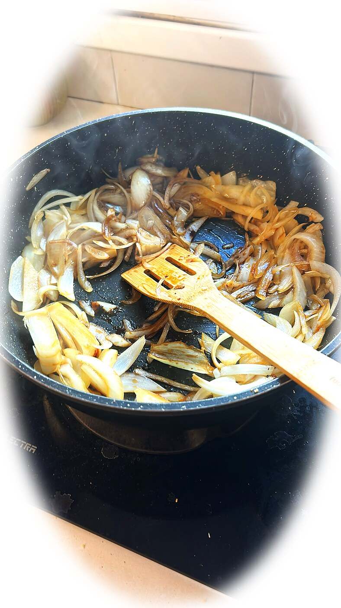
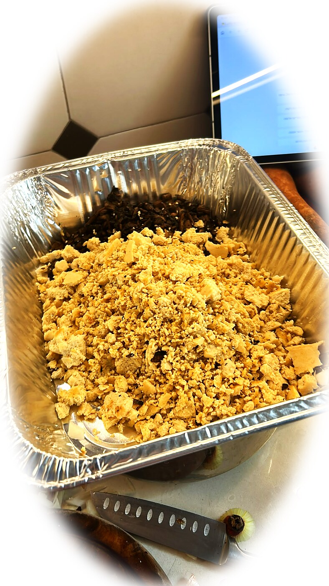
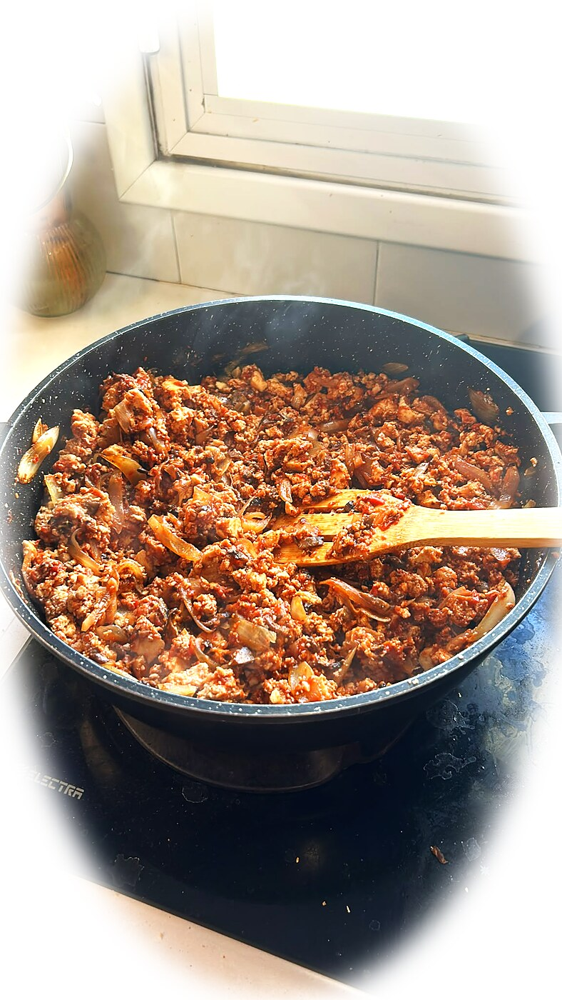
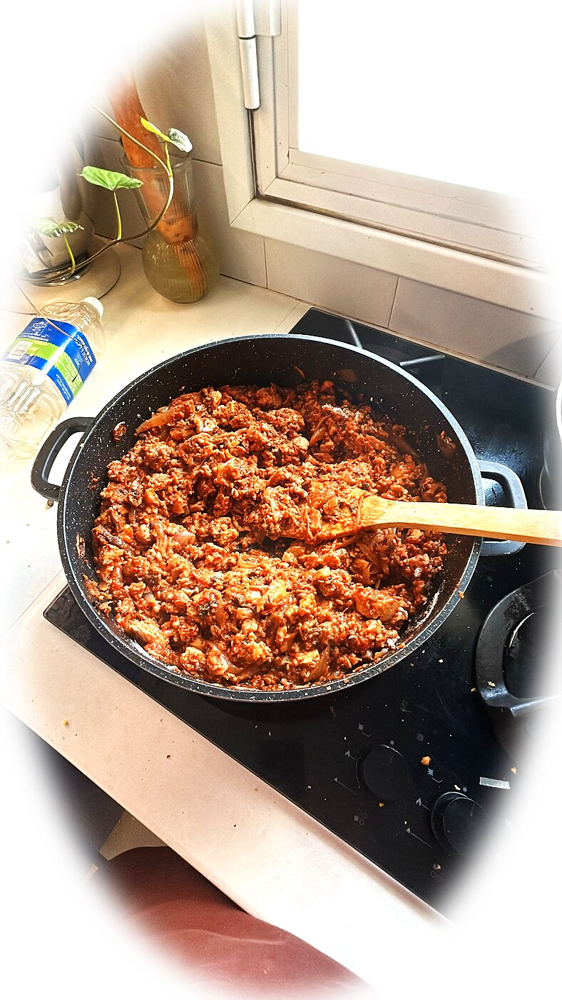
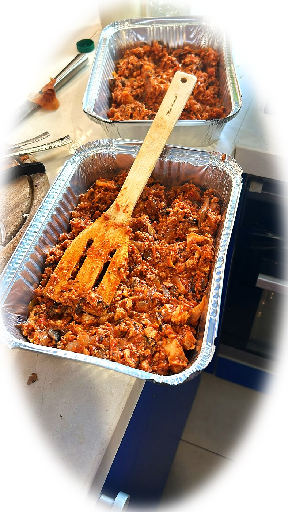
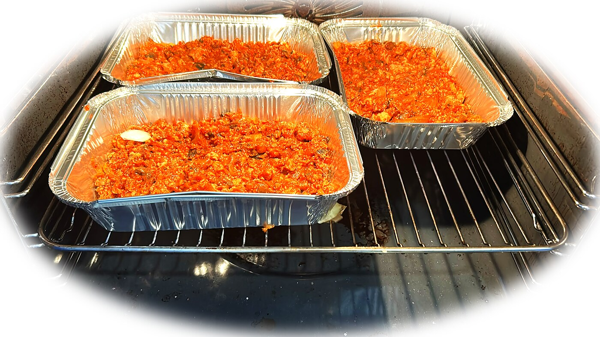
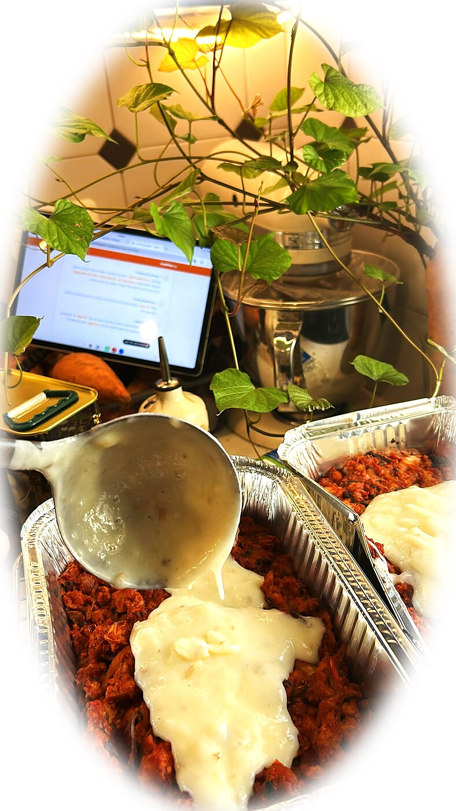
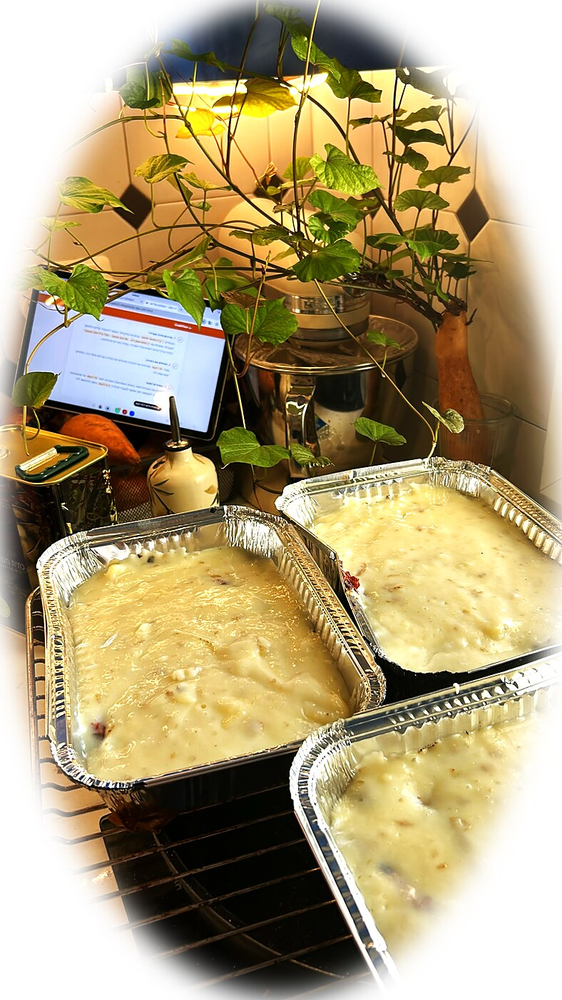

מה צריך - כמויות מומלצות ל-4 מנות
אורי בישל לפי העין והרגש. הכמויות כאן הן נקודת פתיחה נוחה, לא חוק.
הגרסה המקורית משתמשת בבשר טבעוני או אמיתי במקום הטופו והשמפיניון. כאן ההתאמה של אשל היא ברירת המחדל.
התקדמות
0 מתוך 10 שלבים הושלמו
לפני שמתחילים: מחממים תנור ל-190°C, בתוכנית טורבו/מאוורר. אם אין מאוורר, משתמשים בחום עליון-תחתון. מכינים את הרשת במסילה האמצעית.
1. מקרמלים את הבצל
מטגנים 2 בצלים גדולים חתוכים לרצועות עם כף סילאן או סוכר חום וכף בלסמי, כמעט עד לקרמול. לקראת הסוף מוסיפים 3 שיני שום.

2. מייבשים את השמפיניון
במחבת נפרדת מטגנים 250 גרם שמפיניון קצוצים דק עד שכל הנוזלים מתאדים. אל תדלגו על זה - ככה הרגו נשאר עשיר ולא מימי.
3. משחימים את הטופו
מפוררים 400 גרם טופו קשה ביד לפירורים גסים, מוסיפים למחבת ומטגנים עד שהקצוות משחימים. מוסיפים כף רוטב סויה.

4. בונים את הרגו
מאחדים את הבצל, השמפיניון והטופו. מוסיפים 400 מ״ל רוטב עגבניות, 120 מ״ל יין אדום, כף סילאן וכף חרדל עד שמתקבל מרקם סמיך-נוזלי. אפשר להוסיף פטרוזיליה או כוסברה ואפונה.

5. מתבלים ומסמיכים
מתבלים בכפית פפריקה אדומה, מלח ופלפל לפי הטעם. חריפה - רק אם רוצים. בלי כורכום ובלי כמון, הם מפרים את איזון הטעמים. מוסיפים 2 כפות קמח לפי הכמות ולפי העין והרגש.

6. מכניסים לתנור
מעבירים את הרגו לתבנית ואופים 10 דקות ב-190°C, בתוכנית טורבו/מאוורר ובמסילה האמצעית. אם אין מאוורר, משתמשים בחום עליון-תחתון.


בינתיים: שוטפים את המחבת והקרש שכבר סיימנו איתם, ומכינים את תפוחי האדמה לפירה. כך לא מצטברים כלים בכיור.
7. מכינים פירה אוורירי
מבשלים 1 ק״ג תפוחי אדמה במים או במיקרוגל. אפשר להשאיר קליפה ולחתוך לקוביות. מועכים עם 2 כפות שמן זית, 30 גרם חמאה ו150 מ״ל חלב טבעוני. הפירה צריך להיות יחסית נוזלי ואוורירי, אחרת הוא יקרוס מלמטה.
8. פורסים את הפירה
אחרי 10 דקות מוציאים את התבנית ומורחים את הפירה בעדינות מעל הרגו. מזלפים מעט שמן זית.

9. מחזירים לתנור

מחזירים את התבנית לתנור, באותה טמפרטורה ותוכנית, לעוד 15 דקות עד שהשכבות מתייצבות. להשחמה יפה אפשר להעביר לגריל ל-2-3 דקות בסוף, ולהישאר ליד התנור.
בינתיים: מסדרים את משטח העבודה, שוטפים את כלי הפירה ועורכים את השולחן. את התבנית משאירים לסוף.
10. נותנים רגע ומגישים
מוציאים, נותנים לשפרדס פאי כמה דקות להתייצב ומגישים חם. אורי היה אומר: לפי העין והרגש.